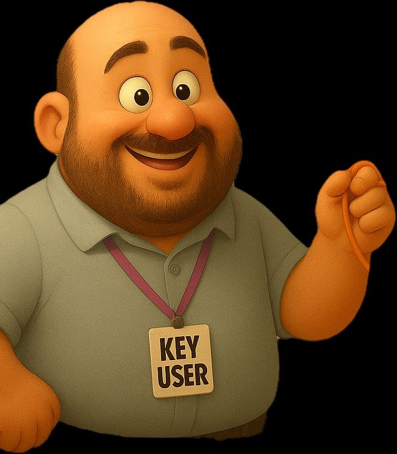

🎯 MISSÃO: FECHAMENTO
Rubricas • Contabilidade • Conciliação no SAP
0
PONTOS
❤️❤️❤️
VIDAS
0
SEQUÊNCIA

🧑💻
💡 Dica (-20)
➡️ Próximo
↻ Reiniciar
🤔
Analise a trilha antes de responder.
🏆
Fechamento concluído!
Você percorreu a trilha Rubrica → Contabilidade → Conciliação.
0
Jogar novamente